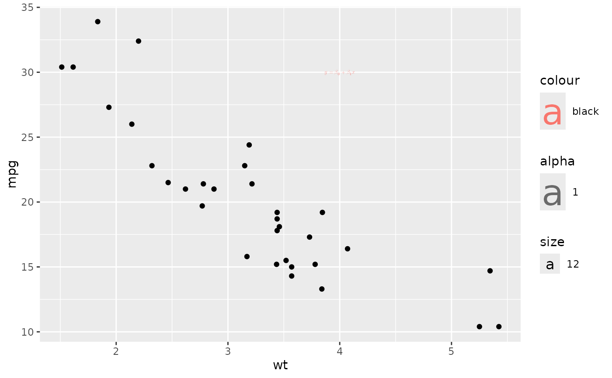

A convenience wrapper around geom_latex() for adding a single LaTeX
math annotation at a specific position. This avoids the need to create a
one-row data frame manually.
Usage
annotate_latex(
x,
y,
label,
fontsize = 11,
colour = "black",
color = colour,
hjust = 0.5,
vjust = 0.5,
angle = 0,
alpha = 1,
math_font = "",
...
)Arguments
- x, y
Numeric position in data coordinates.
- label
LaTeX math string.
- fontsize
Font size in points (default: 11).
- colour, color
Text colour (default:
"black").- hjust, vjust
Horizontal/vertical justification, 0–1 (default: 0.5).
- angle
Rotation angle in degrees (default: 0).
- alpha
Transparency, 0–1 (default: 1).
- math_font
Name of the math font to use.
- ...
Additional arguments passed to
geom_latex.
Examples
# \donttest{
if (requireNamespace("ggplot2", quietly = TRUE)) {
library(ggplot2)
ggplot(mtcars, aes(wt, mpg)) + geom_point() +
annotate_latex(4, 30, "\\hat{y} = \\beta_0 + \\beta_1 x", fontsize = 12)
}

# }